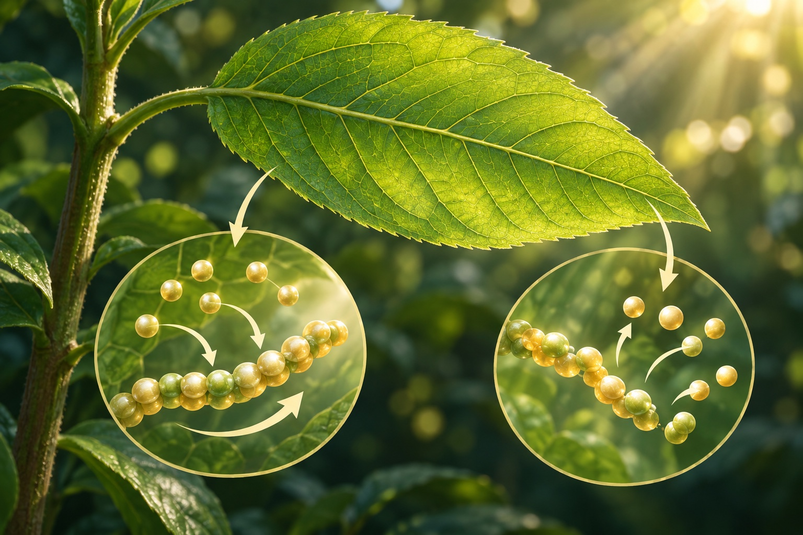

⚗️ 代謝｜生物體內的合成與分解

身體裡，物質正在合成與分解。
植物製造養分，也分解養分取得可用能量。
看圖想一想圖裡哪一處在組合？哪一處在拆開？
展開：定義、生活例子與容易混淆的地方
定義｜身體裡的物質正在改變代謝是生物體內維持生命的各種化學反應，包括合成與分解。這些反應讓生物製造所需物質、取得或利用能量。
例子｜同一個生物也會合成與分解植物用光合作用製造有機養分，也用呼吸作用分解養分、釋出可利用的能量。人消化食物，則是把其中較大的分子分解成較小的物質。
判斷關鍵｜不是只看吃進去或排出來要找的是體內物質的合成或分解。代謝不只指吃東西、流汗或排尿；植物也有代謝，不能把呼吸作用當成動物專屬。